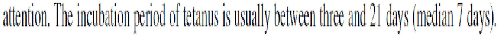
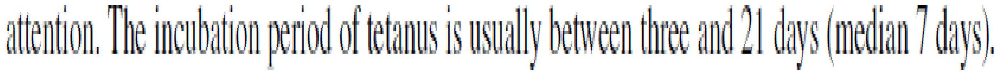
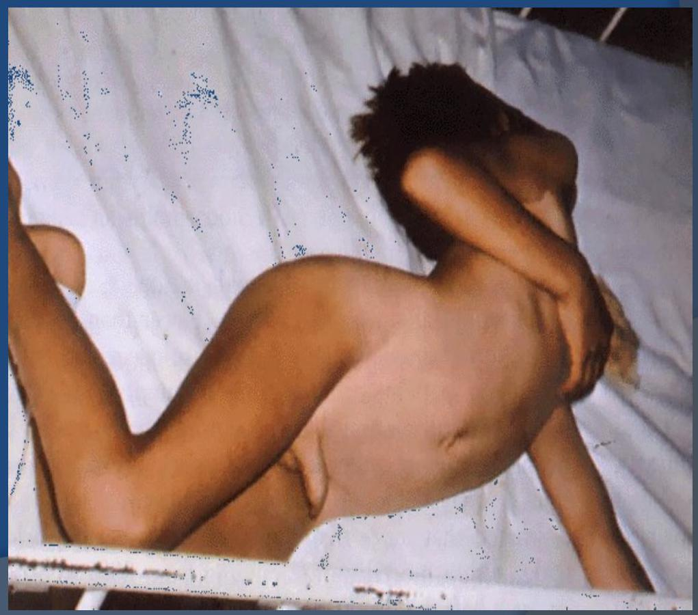

Neonatal Tetanus
Authored by Omondi S. Aluoch & Caroline L. Mramba
Definition
- Tetanus is a neurological disease characterized by an acute onset of hypertonia, painful muscular contractions (usually of the muscles of the jaw and neck), and generalized muscle spasms without other apparent medical causes.
- It is the only vaccine-preventable disease that is infectious but not contagious.
Cause
- Clostridium Tetani.
- An anaerobic bacterium.
- Grows only in dirty wounds.
- Gram-positive motile bacillus.
- Found in human and animal feces.
- Found commonly in areas where soil is cultivated, in warm climates, and during summer months.
Mode of transmission
- Acquired during delivery.
- After delivery.
- Through unsterile cord cutting.
- Poor cord care.
- Occasionally, unsterile circumcision, traditional operations.
- Environmental and social factors: Unhygienic custom habits, Unhygienic delivery practices.
Transmission Cycle
 

Sources
Pathogenesis
- Bacteria gain entry to the newborn's body through the umbilical stump cut by an unsterile instrument or treated in an unclean method.
- Bacteria can only grow in a dirty, crusted umbilicus.
- Neurotoxins are produced after an incubation of 3-10 days.
- Neurotoxins reach nerves, producing typical tetanus spasms.
- Spores that gain entry can persist in normal tissue for months to years under anaerobic conditions.
- When the oxygen level in the surrounding tissue is sufficiently low, the implanted C. tetani spore germinates into a new, active vegetative cell that grows, multiplies, and produces tetanus toxin - tetanospasmin and tetanolysin.
- Tetanolysin is not believed to be of any significance in the clinical course of tetanus.
- Tetanospasmin is and causes the clinical manifestations of tetanus.
Clinical Features
- Gradual onset of symptoms- age 3-14 days.
- Inability to suckle due to spasm of the masseter muscles (trismus).
- Increasing rigidity of muscles, especially abdominal.
- Within 36 hours, typical tetanus spasms follow.
- Difficulty in breathing (laryngospasm) with cyanosis.
- Fever and local signs of umbilical infection.
- The baby develops progressive feeding difficulty (reflex spasm of masseter makes feeding painful).
- Pharyngeal muscles go into spasm and cause dysphagia and choking.
- Spasms of the larynx and respiratory muscles are induced by stimuli such as touch, noise, or bright light, resulting in episodes of apnea and cyanosis.
- Constipation persists until spasms are relieved; the baby becomes rigid and develops paralysis.
Opisthotonos in Tetanus
The baby may develop opisthotonic posturing (in extension) and experience painful spasms. Intercurrent infections, dehydration, and acidosis complicate the clinical picture.
Risus Sardonicus
A characteristic facial expression of a rigid smile caused by facial muscle spasms.
Other Symptoms
- Drooling.
- Fever is usually absent.
- Hand or foot spasms.
- Irritability.
- Uncontrolled urination or defecation.
Sequence of Events
Lock Jaw
Stiff Neck
Difficulty Swallowing
Muscle Rigidity
Spasms
Aims of Management
General Measures
- The child should be nursed in a quiet room and closely monitored.
- Avoid bright light, noise, and unnecessary handling as these can precipitate spasms.
- Clean the umbilical stump and ensure it is dry.
Nursing Care
- Turn the child every 3 hours to prevent pneumonia. Never turn the child onto his back due to the danger of aspiration.
- Clear the airway of secretions by suction as the need arises.
- Continuously monitor with a special intensive care chart.
Intensive Care Chart Example
| Sedation as required | 6am | 9am | 12 Noon | 3pm | 6pm | 9pm | 12 mn | 3am | |
|---|---|---|---|---|---|---|---|---|---|
| Diazepam mgs | 5 | 5 | 5 | 5 | 5 | ||||
| Largactil mgs | 12.5 | 12.5 | 12.5 | 12.5 | |||||
| ATS PPF | |||||||||
| Feed | EBM (ml) | 50 | 50 | 50 | 50 | 50 | 50 | 50 | 50 |
| Position | abdomen | R | L | Abdomen | R | L | Abdomen | R | |
| Spasms | ++++ | +++ | ++ | ++ | + | + | + | ||
Specific Treatment
- ATS 10,000 U IM or IV stat.
- Newer preparations: human antitetanus immunoglobulin (HTIG) 500 U (still very expensive).
- PPF 50,000 U od for 1 week.
Sedation
- Sedate to control spasms but not so much that it increases the danger of pneumonia.
- Begin with diazepam 2.5-5 mg slow IV.
- Continue with diazepam 2.5-5 mg IM and largactil 12.5 mg 6-hourly by NGT.
- Reduce the dose once spasms reduce (become less severe).
- Pass an NGT after primary sedation and give EBM to the baby to meet nutritional needs and keep the breasts active.
- Assess the infant regularly for frequency and severity of spasms and depth of sedation on the basis of respiratory rate and effort.
Further Management
- Tracheotomy if respiration is compromised.
- Artificial respiration.
Prognosis
- Depends on nursing care and prevention of aspiration of secretions and pneumonia.
- If incubation is short, the prognosis is worse.
- If the child survives, recovery is complete 2 weeks to 2 months from onset.
Prevention
- Targets: i) delivery practices ii) antenatal services.
- Immunize all children against Tetanus. Give a booster to all girls leaving school.
- All pregnant women not previously vaccinated in ANC get 2 injections of 0.5 ml TT to protect the mother and the baby. A total of 5 injections (doses) offers life protection.
- Encourage hospital delivery.
- Health education on proper handling of the cord (clean hands, delivery surface, cutting and cleaning), and postnatal visits.
- Train and equip TBA and MCH workers.
- Check your own method of handling the cord and equipment processing.
Tetanus in Older Children
Routes of entry:
- Wounds on limbs e.g., jiggers, injuries, burns, unsterile vaccination, or injections.
- In children without an external wound, consider CSOM (Chronic Suppurative Otitis Media).
Clinical features
- Same as in newborn.
- Inability to open the mouth.
- Painful muscle spasms, without loss of consciousness.
- Spasms involving back muscles result in arching of the back and may raise the child on his heels and neck (opisthotonos).
Treatment in Older Children
- Test dose of ATS first then administer 50,000-100,000 U i.m stat. If HTIG is available no test dose is given (no risk of Rxn), give in a dose of 30-300U.
- Tetanus toxoid 0.5 mls stat.
- PF 0.1g/kg/day for 1 week.
- NGT and IV line established.
- Surgical wound cleaning.
- Sedation - Diazepam 5-10 mg and CPZ (individually adjusted) 6-hourly according to the severity of spasms.
- Afterwards, give a full vaccination of TT or DPT-HepB+Hib.
Tetanus prevention after a wound
- Give TT 0.5 ml IM stat (this is a booster as many children have been immunized in the 1st year of life).
- If not sure of primary immunization, give HTIG 250U IM; if not available, ATS 10,000U IM after an intradermal test dose of 0.02 ml.
- Repeat TT (TT2) after 1 month.
- If the wound is contaminated, give a course of A/B.
- Clean the wound.
Neonatal Tetanus (Summary by Caroline L. Mramba)
Outcome
Manage a baby with Neonatal Tetanus.
- Define neonatal tetanus (case definition)
- Describe the features
- Outline the risk factors
- State the investigations
- Explain the treatment
- His body is rigid.
- Infection can occur when the newly cut umbilical cord is exposed to dirt.
- Most newborns who get tetanus die.
- Begins in the neonatal period - 3-10/7.
- Is a generalized type.
- Follows contamination of the umbilical stump during delivery, associated with high mortality.
- History of a newborn who was able to breastfeed suddenly develops an inability to breastfeed, lockjaw, spasms, seizures & death.
- History of unsterile cutting of the cord or treatment of the stump with cow dung.
Prevention
- Tetanus toxoid to all pregnant women.
- Education on hygiene.
- Appropriate cord care.
Management
- Sedate baby by Phenobarbitone 15mg/kg start.
- Diazepam 0.2mg/kg over 3 minutes. Repeat every 30 min x 3 doses.
- Do not exceed 2mg/kg/24 hrs.
- Clean cord thoroughly.
- Pass an NGT for feeding.
Subsequent Care
- Nurse the baby in a quiet dark room.
- Avoid too much handling.
- Keep the umbilical cord clean & dry.
- Paint the cord with povidone-iodine or spirit.
- Feed EBM through NGT.
- Phenobarbitone 5mg/kg/day in 2 doses.
- Antibiotics IV crystalline penicillin 100,000u/kg/day in 2 doses.
- Monitor vital signs - watch respiration.
- Counsel the mother.
- Refer to ICU.
- Immunize the baby after recovery.